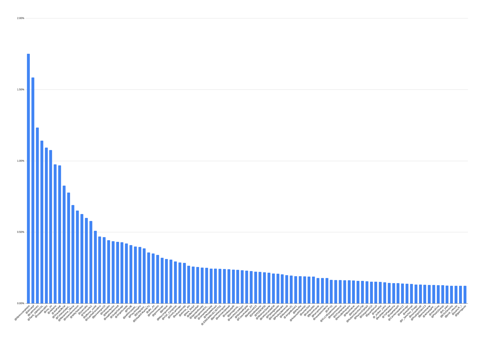
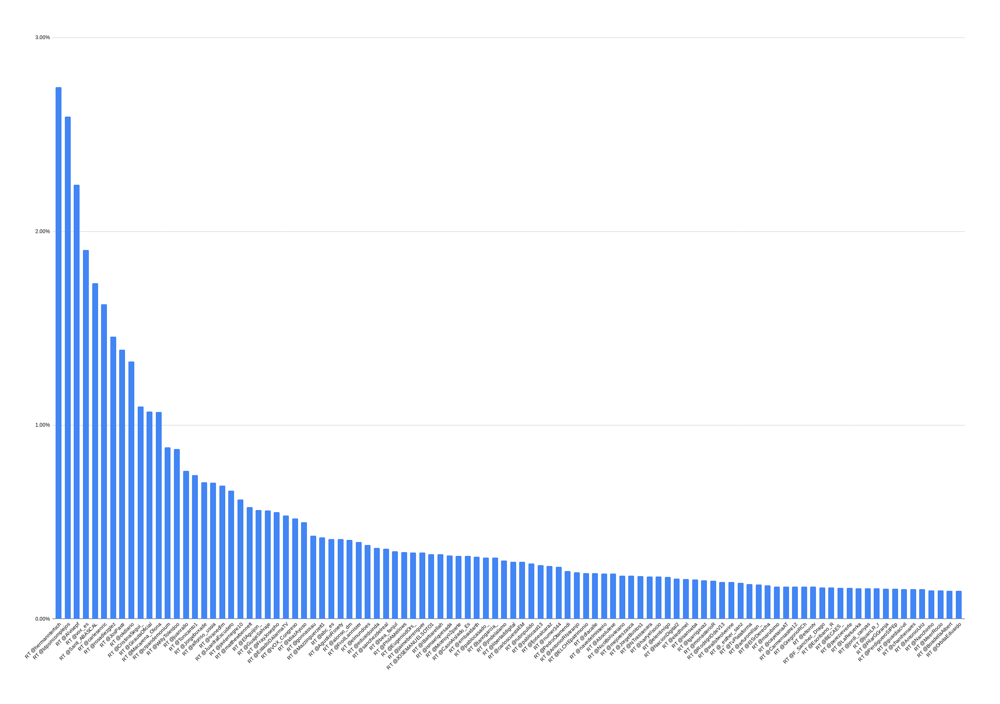
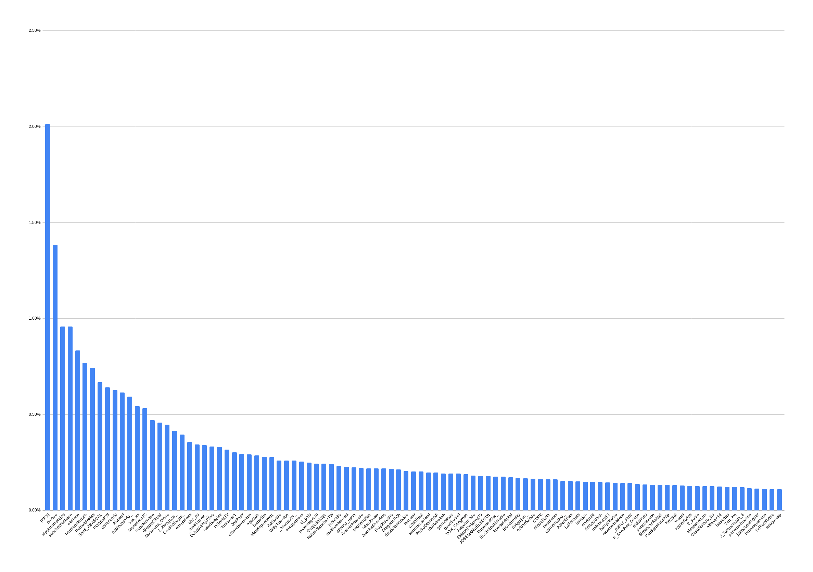

Network dynamics in the Spanish Right
Let's analyze accounts interacting with a specific account and let's see with what other accounts they interact.
We would have the idea that organically people replying or RT-ing a certain account have different interests and follow different people.
We would expect that if the activity is not organic, a large part of the actions performed (like commenting or replying to posts on social media) all follow a specific pattern.
At the following links and images I have collected data and visualization for the accounts RT and replied by users RT-ing @vox_es:
  
@vox-es overall activity and Retweets
Let's compare this with some other parties accounts from the opposite political spectrum, @psoe and @iunida:
@psoe overall activity, RTs only and replies only
@iunida overall activity, RTs only and replies only
We can see how the behavior is completely different by observing how the replies for the accounts in the population aren't necessarily directed at accounts of the opposition with the same volumes, suggesting a more organic behavior.
Some more distribution for accounts in the Spanish right:
What is particularly interesting is how the first two accounts replied by users in these population are always @psoe and @peniche. I would tend to think this accounts are set as targets, suggesting some organized strategy to boost a certain political narrative.
Perche' preoccuparsi per la privacy in tempo di pandemia
Perche preoccuparsi di privacy in tempo di pandemia?
Ne abbiamo discusso in questo webminar: Le contact tracing app rispettano la nostra privacy? [1]
Cerco di aggiungere un po' di contesto al mio intervento in queste note.
Come funziona una app di contact tracing?
Una app di contact tracing e' uno strumento di prevenzione che se utilizzato insieme agli altri metodi di cui disponiamo per fare fronte alla pandemia del covid, ovvero test massivo e profilassi di protezione (igiene, mascherine, distanziamento sociale), puo' aiutare a rompere la catena dei contagi.
Per quanto sappiamo fino ad ora le app europee verrano sviluppate sulle linee guida di protocolli decentralizzati, come il DP-3T [2].
La app funziona (anche se forse e' meglio dire funzionera') piu' o meno cosi':
Un cittadino viene diagnosticado come covid-19 positivo dal suo medico di famiglia, o dalla asl, o in ospedale.
Il personale sanitario e il cittadino configurano la positivita' sulla app che comunica questa informazione ad un server centrale. L'identita' del cittadino ne' dei suoi contatti non e' rivelata, ma solo degli identificativi anonimi.
Questi identificativi vengono inviati a tutte le app, tecnicamente si dice che vengono trasmessi in broadcast.
Le singole app faranno la verifica se sono stati in contatto con l'individuo positivo, verificando se gli identificativi che ricevono sono contenuti tra quelli delle persone con cui il cellulare e' stato in contatto.
Le funzioni fondamentali di una app di contact tracing possono essere riassunte nelle due seguenti:
Rivelare le interazioni sociali in caso di contatto con un individuo positivo
Poter calcolare un fattore di rischio per gli utenti
Le funzioni che preoccupano chi si occupa di privacy, invece sono le seguenti:
Il grafo sociale degli individui puo' essere ricompilato osservando i dati scambiati dall'applicazione
La condizione di positivita' di un individuo puo' essere rivelata.
Gli spostamenti e le coordinate geografiche degli utenti dell'applicazione possono essere calcolati o ricavati dai dati scambiati dall'applicazione.
Che rischi presuppone creare e utilizzare una app di contact tracing?
Protezione dei dati
Perche' una app di contact tracing non sia un rischio per la popolazione e' importante che vengano rispettati alcuni criteri di protezione dei dati raccolti, tra cui:
Minimizzazione dei dati
Nessuna entita' deve essere in grado di poter osservare o ricavare il grafo sociale degli utenti della app. Neanche in forma anonimizzata.
Questo aspetto e' molto importante perche' il grafo sociale di una popolazione o semplicemente di un gruppo ristretto di persone puo' rendere pubbliche informazioni altrimenti confidenziali.
Le informazioni ricevuti dagli utenti e raccolte dal sistema devono essere
solamente quelle essenziali.
Le informazioni raccolte sugli utenti che decideranno di installare la app devono essere solo quelle necessarie a ridurre il rischio di diffusione dell'empidemia.
Gli individui negativi devono essere protetti
Il sistema non puo' essere utilizzato come uno strumento di sorveglianza della popolazione. Nessuna informazione sugli utenti negativi deve essere raccolta dal sistema.
I dati devono essere distrutti
Il sistema deve essere in grado di dimenticare i dati raccolti alla fine dell'empidemia. Se non ci saranno pazienti infetti che trasmettono dati riguardo la loro positivita', e se in generale le persone smetteranno usare la applicazione, i dati dovranno essere distrutti.
Sicurezza
Perche' una app di contact tracing sia utile per il rischio epidemiologico si stima che debba essere utilizzata da circa il 50%-70% della popolazione.
Per avere un'idea di questo dato fondamentale, pensiamo che il 60% delle persone che hanno un cellulare, hanno installato whatsapp.
Inoltre una app che venga utilizzata da un numero cosi' elevato di persone, e che potenzialmente contiene dei dati sensibili e riservati sugli utenti, diventa necessariamente un target. Esiste un mercato di vulnerabilita' di sistemi informatici a cui accedono agenzie governative e non per le quali questi dati possono rappresentare un valore.
Rischi
Un avversario modifica la app per raccogliere ulteriori informazioni sugli utenti
In questo scenario un possibile avversario puo' collezionare gli identificativi anonimi generati dai cellulari con cui e' stato in contatto per identificare degli individui.
Un avversario implementa un'antenna per intercettare le connessioni bluetooth dei cellulari in una zona circoscritta.
Questo scenario e' simile al precedente. In questo caso pero l'avversario utilizza dei sistemi per poter intercettare i segnali bluetooth dei cellulari nelle sue vicinanze e poter identificare gli utenti della app.
Un avversario riesce ad impersonificare le notifiche della app e comunicare degli status di esposizione falsi agli utenti
Questo scenario e' simile alle campagne di fishing agli account bancari. Un avversario crea un messaggio simile alla notifica che invia la app e comunica ad un numero elevato di utenti di essere stati in contatto con un positivo.
L'effetto di questo attacco e' quello di generare panico o di ridurre la fiducia della popolazione nella app (discoragiandone l'utilizzo).
Perche' e' importante parlare di privacy
Identificare un individuo positivo puo' rappresentare un rischio per la sicurezza fisica di quella persona.
Alcune persone possono reaggire con aggressivita' alla notizia di essere stati in contatto con una persona infetta.
Identificare il grafo sociale di gruppi di persone e' un'informazione molto riservata che puo' essere utilizzata per vari scopi.
Immaginate che sia possibile accedere alle informazioni su come, quando e quanto spesso certi esponenti di gruppi di politici si incontrano?
Immaginate ceh sia possibile sapere che i gruppi direttivi di determinate aziende stanno avendo delle riunioni con una certa frequenza?
Inoltre e' importante sottolineare che la tecnologia non e' neutra, contiene le influenze politiche del momento in cui viene creata. Le architetture tecnologiche che definiamo in questo momento straordinario determinaranno in parte i nostri dirtitti futuri.
REFERENCES
[1] Le contact tracing app rispettano la nostra privacy? https://alexandrageese.eu/de/le-contact-tracing-app-rispettano-la-nostra-privacy/
[2] Decentralized Privacy-Preserving Proximity Tracing https://github.com/DP-3T/
Online disinformation campaigns. A deep dive.
A few days ago I published a little summary of online disinformation campaign for the spanish far right [1].
I tried to highlight the emerging patterns of how these amplification machines operate. Shoving retweets distribution for users rt-ing one of the top-talker accounts.
I am now going to share a larger archive of tweets. To obtain this archive I compiled all the tweets from users that have retweeted the account @ldpsincomplejos.
Here is how I obtained the tweets for the account @ldpsincomplejos was obtained:
def get_tweets_search(key, client):
tweets_endpoint = "https://api.twitter.com/1.1/search/tweets.json?q=" + key + "&count=500&include_entities=true&result_type=recent"
response, data = client.request(tweets_endpoint)
return json.loads(data)
This function will return 500 tweets, including both tweets by the account and RTs to the account. For each tweet I extracted the username and got the latest 200 tweets user timeline.
def get_timeline(username, client):
timeline_endpoint = "https://api.twitter.com/1.1/statuses/user_timeline.json?screen_name=" + username + "&include_rts=true&count=200"
response, data = client.request(timeline_endpoint)
return json.loads(data)
Now I identified a few top-talkers and computed the distribution of RTs to Accounts.
Here are some results:
Twitter distribution for users RT-ing @okdiario: who are they RTing?

Twitter distribution for users RT-ing @hermanntertsch: who are they RTing?

Twitter distribution for users RT-ing @alvisepf: who are they RTing?

Here is the thing. If you look at the distribution of comments instead you get a different result.
Twitter distribution for users commenting-ing @okdiario: who are they commenting?

Twitter distribution for users commenting-ing @hermanntertsch: who are they commenting?

Twitter distribution for users commenting-ing @alvisepf: who are they commenting?

This means in practice that there is a list of accounts RT-ing sources on the right and commenting on accounts from the left. The anticipation machines objective is in fact to spread division and hate.
Finally here is a visualization of the graph of accounts RTin OkDiario:

If we isolate the accounts doing more than 100 RT, we find a group of approximately 20 accounts doing most of the tweets.

{kind=link}
{kind=link}
{kind=link}
{kind=link}
{kind=link}
{kind=link}
{kind=link}
{kind=link}
Here is probably a team of accounts acting to promote the tweets from OkDiario and a group of other accounts.
Would you like to have access to this data?
I have a metabase instance setup on heroku.
You can have a look at the data used in this study.
If you get in touch I can give you access.
REFERENCES
[1] https://www.hiro7.eu/blog/2020-04-05-online-disinformation